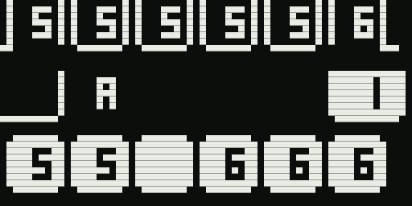
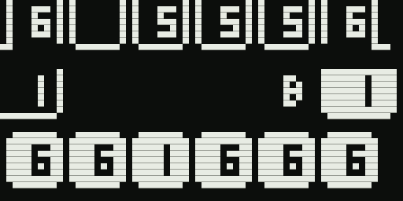

Kalah
K. Semrad · DREAMER no. 6 (1981-02) p. 9 1K RAM



The ancient sowing game with five marbles in each small hole: pick up a hole and sow it around, and a last marble in your own big hole earns another turn. The player with more marbles in the big hole wins. A later modification, printed in issues 16-17, lets the DREAM play the white side.
Keys
1-6 pick the hole; in the computer version C = play the computer, B = two players.
Files
| File | Version | Load | Run |
|---|---|---|---|
| Kalah.c8 | main | 0200-038F | C000 |
| Kalah (vs computer).c8 | vs computer | 0200-03FF | C000 |
Listing as transcribed (with notes): kalah.txt, kalah_vs_computer.txt
Source
DREAMER no. 6 on archive.org, p. 9 (PDF page 11). Author: K. Semrad.
Corrections applied
- Rows 0390-03F0 left out of 'Kalah' (issue 6: workspace printed in error).
- Computer version: issue 16 modification (R. Semrad) applied: 0276 A080, 0284 A086, 0288 A08D, 0290 13DE, 02A2 A07F, 02B2 A07F, 02BA A07F, 0318 A080, 0322 A0FC, 0356 1386, 036E A07F, plus new code 0380-03FF.
- Computer version: 038B A085 -> A086 (erratum in issue 17).
- Computer version: issue 17 erratum '03CA = E0' applied to 03CB (6080 -> 60E0, a longer pause while the computer thinks); at 03CA it would give E080, an invalid opcode.
Open doubts
None.